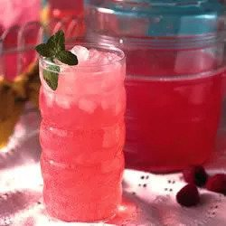

Easy Raspberry Lemonade

A Nice Drink For The Summer
Ingredients
- 1 (12 fluid ounce) can frozen raspberry lemonade concentrate
- 3 cups water
- ¾ teaspoon lime juice
- 1 (12 fluid ounce) can or bottle lemon-lime flavored carbonated beverage
- 1 cup crushed ice
- 1 cup fresh raspberries, garnish
- 18 Mint leaves, for garnish
Steps
- In a large punch bowl combine raspberry lemonade concentrate, water and lime juice.
- Then stir in lemon-lime soda and crushed ice.
- When serving garnish each glass with a raspberry and a mint leaf